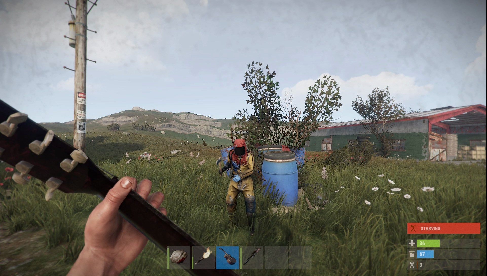
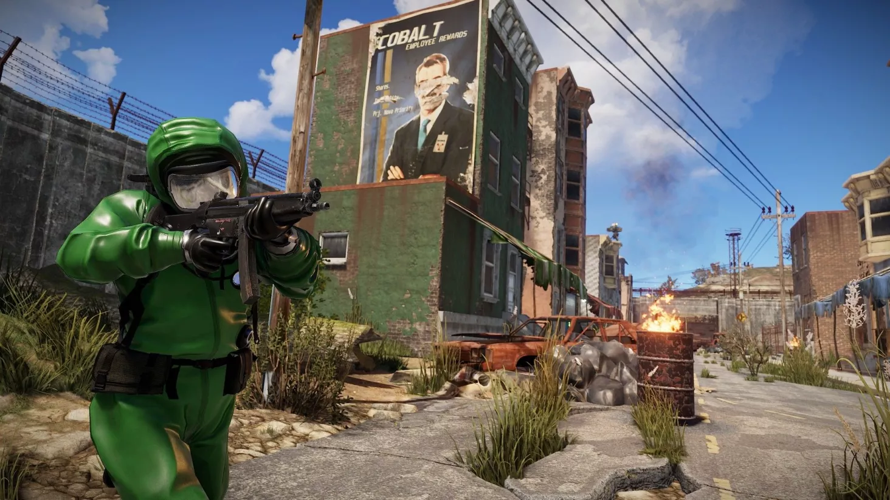

Rust – komputerowa gra survivalowa z widokiem pierwszoosobowym. Wyprodukowana została przez brytyjskie studio Facepunch Studios. 11 grudnia 2013 wydano grę w trybie wczesnego dostępu na platformie PC. 8 lutego 2018 ukazała się pełna wersja Rusta.
Typ:
Gra
Twórca:
Facepunch Studios
Wydawca:
Facepunch Studios
Kompatybilne systemy operacyjne:
Windows 7, Windows 8, Windows 10, Linux, MacOS
Ostatnia aktualizacja:
11 kwietnia 2020r.
Minimalne wymagania sprzętowe
- Procesor: Intel Core i7-3770 / AMD FX-9590 or better
- Grafika: GTX 670 2GB / AMD R9 280 better
- 25 GB dostępnej przestrzeni
- około 10GB RAM
Zalecane wymagania sprzetowe
- Procesor: Intel Core i7-4790K / AMD Ryzen 5 1600
- Grafika: GTX 980 / AMD R9 Fury
- 25 GB dostępnej przestrzeni
- Około 16GB pamięci RAM
Najlepsze dlc to:
- Rust - Instruments Pack
- Rust - Sunburn Pack
- Rust - Voice Props Pack
- Rust Soundtrack




Miejsce w rankingu najcześciej granych gier na Steam:
Nr. 8
Do zakupu na Steamie: (Kliknięcie logo spowoduje przeniesieniem na stronę sklepu)